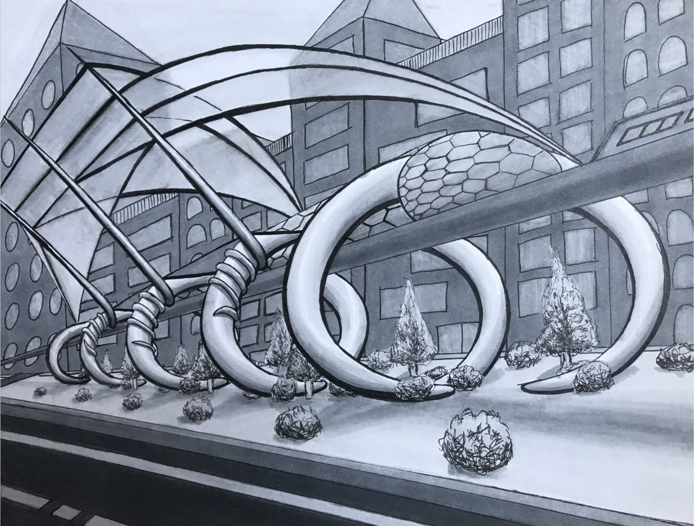
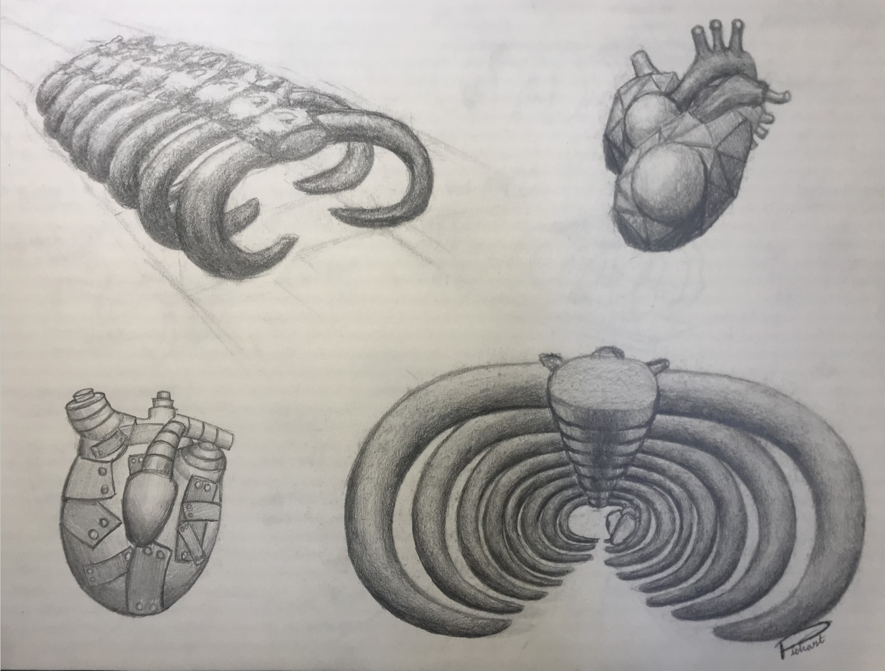

Train Platform
- Medium
- Graphite, alcohol marker, ink pen
The sculpture, The Anatomy of a Hug by Luna Lu, and the Lion King elephant graveyard inspired me to anatomy as sculptural elements. After using multiple pages of my sketchbook devoted to ideation, I settled on a train platform inspired by a ribcage. This train platform is illustrated in the middle of a busy city to bring nature and communities closer to daily transportation with a park under an overhead platform.

